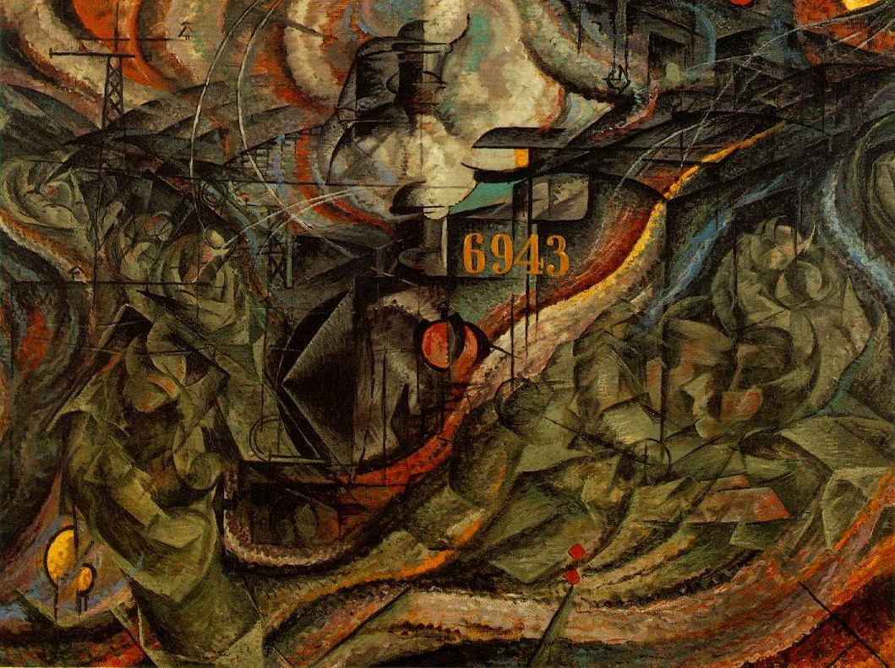

")
")
“We will sing of the great crowds agitated by work, pleasure and revolt; the multi-colored and polyphonic surf of revolutions in modern capitals: the nocturnal vibration of the arsenals and the workshops beneath their violent electric moons: the gluttonous railway stations devouring smoking serpents; factories suspended from the clouds by the thread of their smoke; bridges with the leap of gymnasts flung across the diabolic cutlery of sunny rivers: adventurous steamers sniffing the horizon; great-breasted locomotives, puffing on the rails like enormous steel horses with long tubes for bridle, and the gliding flight of aeroplanes whose propeller sounds like the flapping of a flag and the applause of enthusiastic crowds.”
With the adoption of the manifesto, Futurists in Italy began to fully embrace technological progress at the expense of restraint, foresight, and lessons learned from the past. Anything less than moving forward is considered a failure. The rabid desire to embrace the new and reject the old comes at the heels of a dwindling Italian empire, a nation that is overshadowed by its neighbors to the north as well as by its former glory. This embrace is the first step on the path that leads to the downfall of the movement.'
In Umberto Boccioni's States of Mind I, II, III (Alternatively titled, The Farewells, Those Who Stay, and Those Who Go), the fissure created by modern technology first appears. The Farewells depicts a busy train station, marked by the ever-moving style futurism details. Even stationed, the terminal evokes a feeling of perpetual and undying motion, unable to coexist with its surroundings harmoniously. The painting presents a sense of pride the Italian movement had in modernity; a sense of feeling that progress is the way to greatness. The steam from the locomotive appears as a halo atop the machine, towering high above the natural world it glides over.
However, this pride comes at a cost when evaluating the sister pieces to the main work. In both Those Who Stay and Those Who Go, we can see a sense of anguish and anxiety among the civilians. Those Who Go are overwhelmed with horizontal lines, depicting the ever transient state that technology dictates, while the faces that are recognizable appear broken and lifeless. Those Who Stay have the opposite effect from the same scism. Those Who Stay remain in an omnipresent shadow and gloom depicted by the heavy verticality and muted colors. All colors that once existed within the station are abandoned in both cases as the population splits, and the prideful embrace of modernity leaves only despair on those who adopt the changing culture, but also on those who wish to remain without it. The fracturing of society by the rapidly changing pace brought about by industrialism has an omnipresent effect no matter what choices one makes.